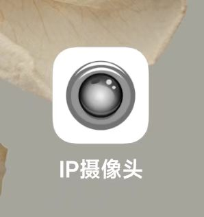
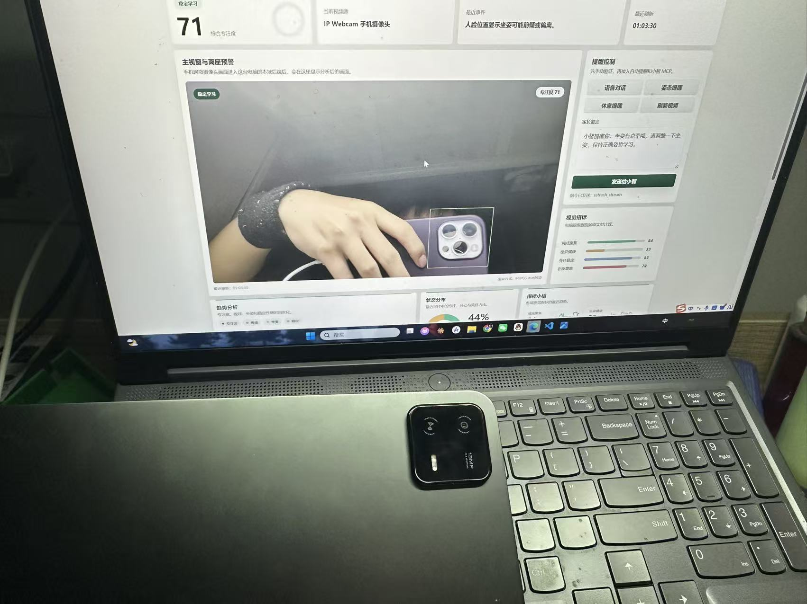
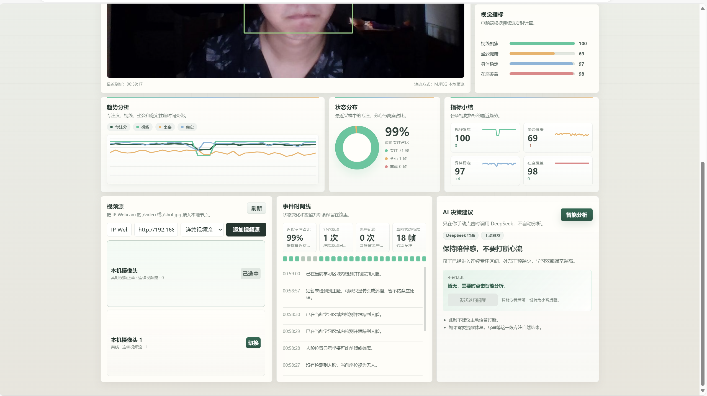
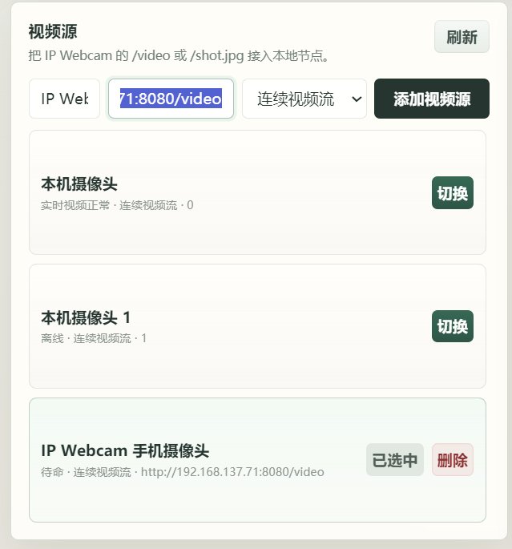
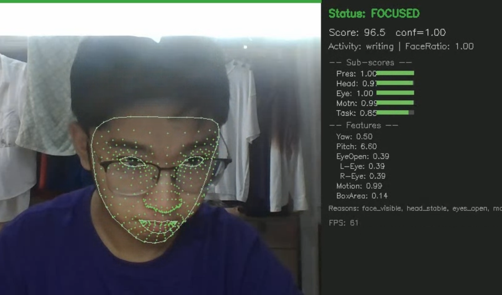
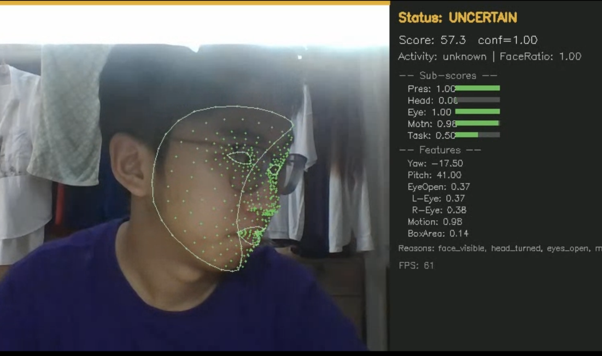
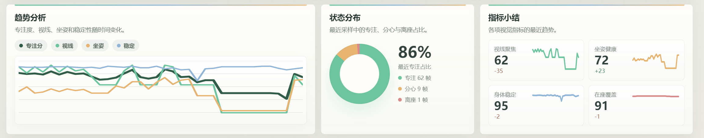
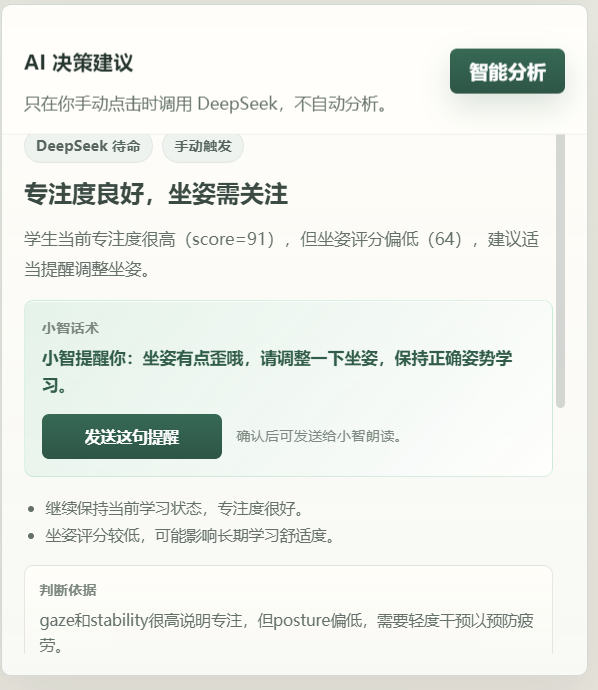
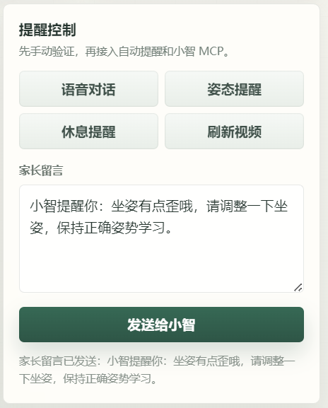
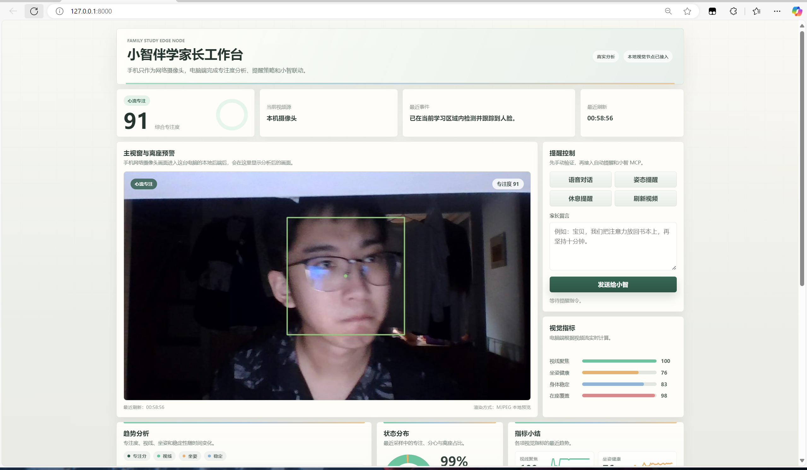

xiaozhi-study
项目阶段汇报
项目汇报
小智伴学
专注监督系统
面向桌面伴学机器人的学习状态监督方案。系统采用手机摄像头采集、电脑端视觉分析、家长端决策控制与 MCP 机器人提醒的技术路线。
采集端废旧手机或平板作为局域网摄像头，降低硬件改造成本。
分析端电脑端承载视频接入、专注度识别、趋势统计与 AI 辅助分析。
执行端家长确认后通过 MCP 向小智发送提醒，形成监督闭环。
汇报重点
- 01硬件限制下的替代采集方案
- 02电脑端专注度识别与数据可视化
- 03家长端人工调控与信任机制设计
- 04DeepSeek 辅助分析与小智提醒联动
- 05MCP 通信联调与后续交付计划
本项目重点为围绕真实使用约束构建可演示、可扩展、可联动的端到端系统。
手机采集 · 电脑分析 · 家长决策 · 小智执行01 / 17
xiaozhi-study
痛点定义
需求背景
问题与约束

硬件接口受限
现有小智机器人不便继续扩展摄像头模块，直接改动硬件会增加接口适配、供电和结构安装风险。

端侧算力有限
专注度识别涉及视频流处理和多指标统计，手机端不承担算法，可降低发热、卡顿和维护复杂度。

家长信任要求
家长通常希望保留确认与干预权，因此系统需要提供人工调控入口，而非完全由机器人自主判断。
问题定义：硬件接口、端侧算力、家长信任02 / 17
xiaozhi-study
总体方案
系统设计
总体架构
INPUT手机 / 平板采集运行 IP Webcam，将闲置设备转换为局域网视频输入。
STREAM电脑端接入接收视频流或截图流，并统一管理视频源状态。
VISION状态识别计算专注度、姿态稳定性、在座状态和离座时长。
CONSOLE家长端决策集中展示画面、指标、趋势、提醒控制和 AI 建议。
ACTION小智端执行通过 MCP 发送提醒消息，由小智完成语音提醒。
技术路线：采集、分析、决策、执行03 / 17
xiaozhi-study
设备部署
网络部署
部署方案
手机端运行 IP Webcam，仅负责图像采集和局域网传输，不部署识别算法。
电脑端运行后端服务、视觉分析模块、家长端页面和 DeepSeek 调用入口。
小智端通过 MCP 接收提醒指令，负责对孩子发出语音或动作提醒。
家长端保留确认、手动留言、AI 辅助判断和一键发送提醒能力。
采集链路验证
已完成局域网内平板摄像头调用，验证闲置移动设备作为视频输入端的可行性。
部署原则：低成本、低改造、便于调试04 / 17
xiaozhi-study
视频源接入
视频接入
视频源管理
- 兼容 IP Webcam 的连续视频流与静态截图地址。
- 支持视频源新增、切换与删除，便于替换采集设备。
- 后端统一维护视频源配置，前端负责展示与操作。
- 接口设计保留多摄像头和备用视频源扩展空间。
该模块将视频输入从固定地址改为可配置资源，提升了系统调试和后续部署的可维护性。

视频源配置界面
输入层实现：视频流接入、设备切换、配置管理05 / 17
xiaozhi-study
视觉识别
视觉分析
视觉识别模块

稳定学习样本
人脸位于有效区域，视线方向和头部姿态较稳定，可作为专注状态判断的重要依据。

异常状态样本
当人脸偏移、姿态变化明显或短时未检测到有效人脸时，系统进入分心或离座观察区间。
识别依据：人脸特征点、姿态变化、检测稳定性06 / 17
xiaozhi-study
状态机策略
提醒策略
状态分级策略
稳定学习
各项指标保持稳定，系统仅记录过程数据。
不触发提醒，保留趋势记录。
轻度分心
视线、坐姿或稳定性出现短时波动。
建议采用低干扰提醒。
短暂离座
短时间未检测到有效人脸或在座状态下降。
进入观察窗口，避免立即误报。
超时离座
离座时间超过设定阈值，需要外部提醒介入。
由家长确认后发送小智提醒。
策略目标：降低误报，控制提醒频率07 / 17
xiaozhi-study
趋势分析
数据统计
趋势统计

专注度变化
姿态稳定性
在座覆盖率
趋势图用于记录一段时间内的学习状态变化，避免仅依据单帧画面做出提醒判断。
数据展示：从瞬时识别扩展到过程评估08 / 17
xiaozhi-study
家长端界面
家长端界面
家长端工作台
- 集中展示实时画面、视觉指标、趋势图和事件时间线。
- AI 分析结果作为辅助依据，提醒发送仍保留家长确认入口。
- 支持预设提醒、家长留言和 AI 建议话术三类提醒方式。
- 通过人工调控提高家长对监督过程的可理解性和信任度。
家长端承担监督解释与人工确认功能，是算法判断进入家庭教育场景前的重要缓冲层。
界面功能：监看、判断、提醒、回看09 / 17
xiaozhi-study
AI 决策
智能分析
AI 辅助决策

综合分析输出
基于当前视觉指标和趋势数据，生成状态判断、观察依据、干预建议和提醒等级。

提醒话术生成
AI 建议可转换为小智提醒话术，也支持家长根据现场情况手动编辑提醒内容。
调用策略
DeepSeek 采用手动触发方式，不进行自动周期调用，以控制 API 成本并保留人工判断。
模型deepseek-v4-flash
触发家长手动点击
输出建议、依据、话术
AI 定位：提供依据和建议，不替代家长决策10 / 17
xiaozhi-study
MCP 闭环
机器人联动
MCP 提醒闭环
01状态识别电脑端根据画面分析得到专注、分心或离座状态。
02提醒确认家长结合实时画面、趋势数据和 AI 建议进行确认。
03消息封装整理提醒文本、来源类型、提醒等级和时间戳。
04MCP 通信通过 MCP 通道向小智机器人发送结构化提醒消息。
05机器人执行小智以语音方式对孩子进行温和学习提醒。
联动目标：电脑端判断结果最终由小智执行11 / 17
xiaozhi-study
MCP 联调
通信联调
MCP 联调计划
输入来源手动提醒、AI 建议和状态告警均可生成待发送消息。
消息字段包含提醒文本、提醒等级、来源类型、时间戳和目标设备。
验证目标确认请求格式、返回状态、小智端接收结果和语音执行效果。
补充材料后续补充通信日志、请求体截图、回包截图和小智响应截图。
截图预留 1MCP 发送日志 / 请求体
截图预留 2小智回包 / 执行结果
当前状态：消息结构已规划，等待完整联调截图补充12 / 17
xiaozhi-study
预留页
材料预留
联调截图
预留图片区域 1用于放置 MCP 请求体、发送日志或接口回包截图。
后续补充材料13 / 17
xiaozhi-study
预留页
材料预留
补充材料
预留图片区域 2用于放置后续测试截图、演示结果或老师要求补充的材料。
后续补充材料14 / 17
xiaozhi-study
工程工作量
实现工作
工程实现内容
视频与后端
- IP Webcam 视频流接入
- 视频源配置管理
- 状态数据接口设计
视觉与状态
- 人脸与姿态特征提取
- 专注度综合评分
- 离座时长与状态机
家长端 UI
- 实时画面与指标面板
- 趋势图与时间线展示
- 提醒控制与话术选择
AI 接入
- DeepSeek 手动调用
- 分析依据与行动建议
- 小智提醒话术生成
MCP 联动
- 提醒消息字段设计
- 发送通道接口预留
- 联调材料页面预留
汇报材料
- 运行截图整理
- HTML 汇报 PPT 制作
- 后续补图结构预留
工作范围：采集、识别、界面、AI、通信、汇报材料15 / 17
xiaozhi-study
阶段成果
阶段总结
阶段成果
视频接入已完成局域网视频流调用、视频源配置和设备切换验证。
视觉分析已完成专注度、坐姿稳定性、在座状态和离座时长展示。
家长端已完成实时监看、趋势统计、提醒控制和 AI 辅助分析界面。
提醒链路已完成消息结构和发送入口设计，MCP 真实联调继续推进。

家长端运行界面
阶段结论：系统主链路已成型，通信联调继续完善16 / 17
xiaozhi-study
后续工作
后续计划
后续工作
识别稳定性
- 优化专注度评分阈值
- 降低转头造成的误判
- 补充不同光照场景测试
MCP 联调
- 完成小智端回包确认
- 补充真实通信截图
- 建立提醒等级映射关系
汇报交付
- 完善平台使用说明
- 整理现场演示流程
- 补充最终测试材料
后续目标是完成 MCP 真实通信验证，并提升识别稳定性，使系统达到可连续演示和可进一步部署的状态。
总结与后续计划17 / 17